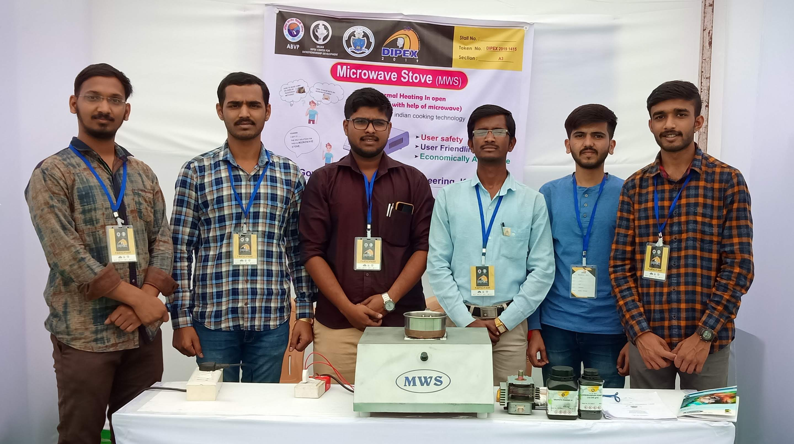
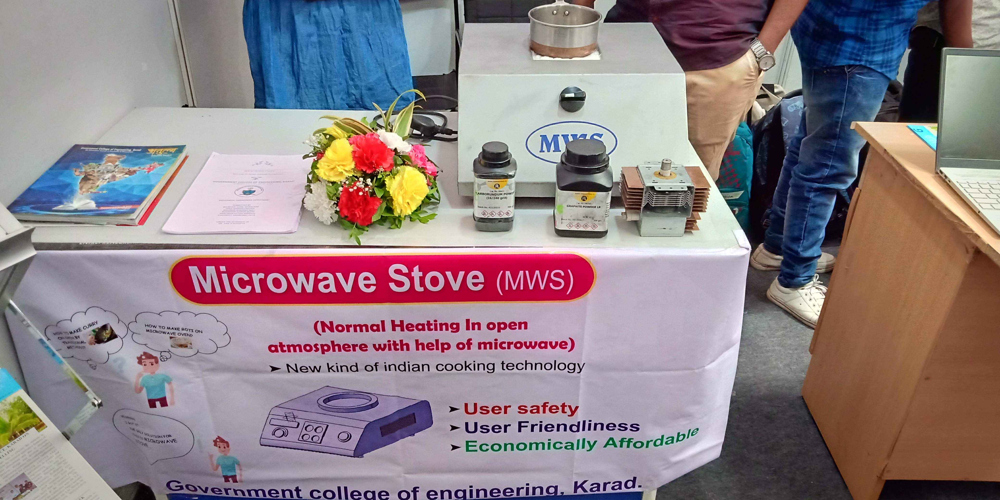
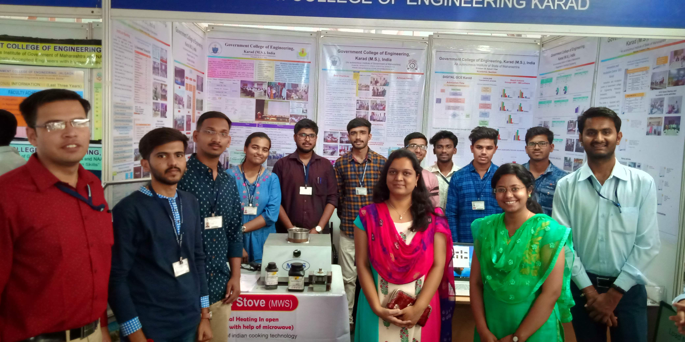

Why the idea started
The original motivation was practical: to question whether cooking could be made more energy-efficient through a different heating approach while keeping the interface familiar for everyday use.
The Microwave Stove story began during engineering, when the team started exploring how cooking could be made more energy efficient without giving up the familiarity of a stove-like experience. That early exploration led to prototypes, public demonstrations, patents, and an ongoing development journey.

Why the idea started
The original motivation was practical: to question whether cooking could be made more energy-efficient through a different heating approach while keeping the interface familiar for everyday use.
What we observed
The team saw space for a new cooking concept that could potentially operate at lower power than conventional electric appliances while still feeling intuitive at the utensil level.
What followed
That curiosity turned into repeated prototyping, lab experiments, proof-of-concept validation, and the protection of the idea through patents.
Timeline
The project is still continuing, but these milestones capture the core public-safe development arc.
Idea started
The idea began during engineering studies, driven by interest in alternative low-power cooking approaches.
First prototype
Initial hardware was built to test whether the concept could work beyond theory.
Lab experiments
Experiments including heating and control observations helped validate important parts of the concept.
Proof-of-concept validation
The prototype was demonstrated publicly at a lab and exhibition level as a working proof of concept.
Patent filing / granted patents
The work led to patent filings and granted Indian patents supporting the hybrid cooking concept.
Current partner discussions
The project is now oriented toward further engineering, validation, and discussions that could support future development.
Next phase of product development
The path ahead includes safety validation, manufacturing evaluation, and partner-led product engineering.

